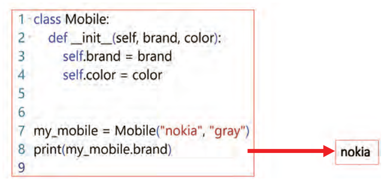
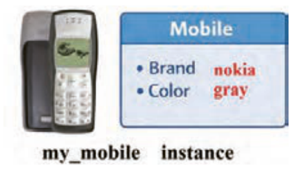
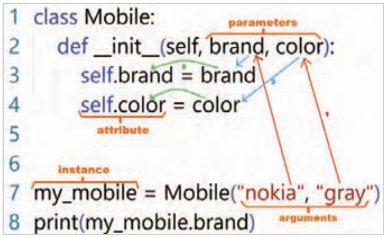
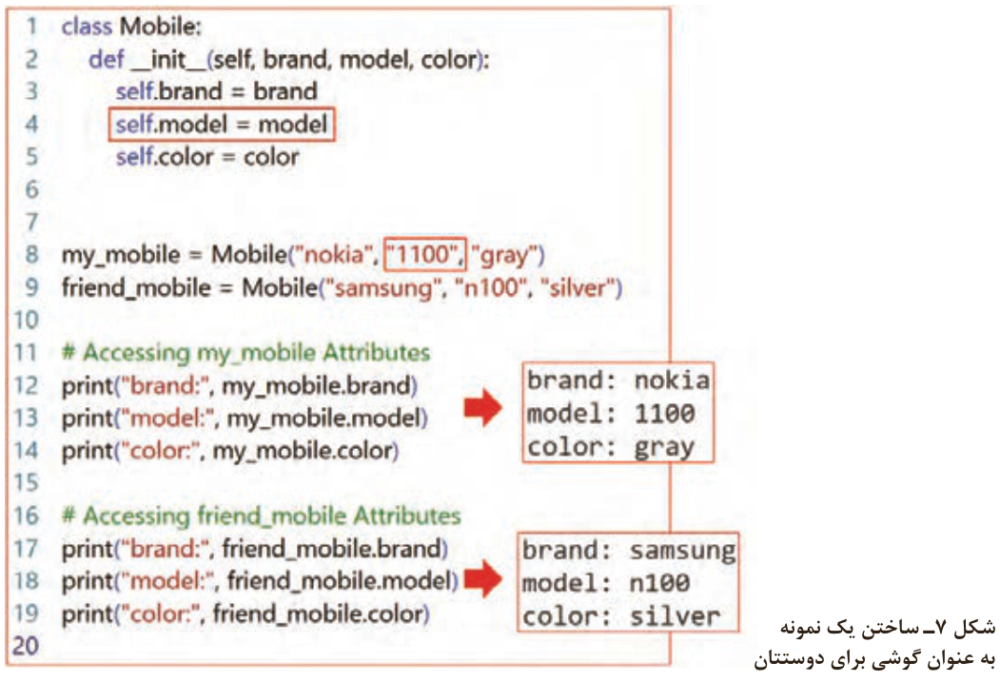
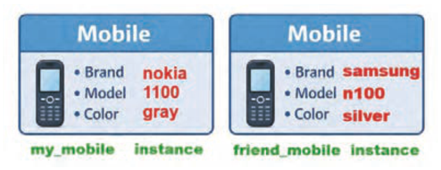
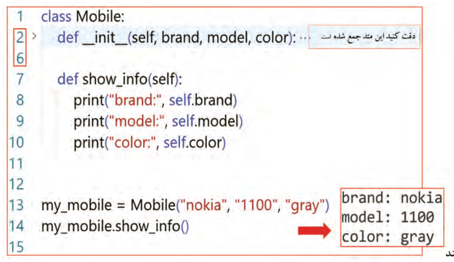
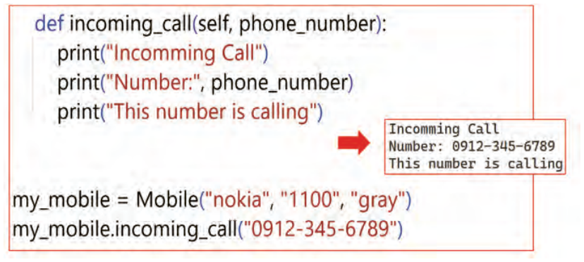

حالا نوبت آن است که در محیط برنامهنویسی، اولین کلاس (class) خود را ایجاد کنید و سپس با استفاده از آن کلاس، یک نمونه(Instance) بسازید. کد شکل 4 را درون یک فایل جدید به دقت تایپ کنید.

شکل ۴: اولین کد برای تعریف
کلاس و ساخت نمونه
خط 1: یک کلاس به نام Mobile تعریف میشود.
کلاس در واقع یک الگو یا نقشه برای ساختن موبایلهاست.
دقت کنید کلاس، خود موبایل نیست بلکه الگویی برای ساخت موبایلهاست.
بر اساس استانداردهای نامگذاری در پایتون (PEP8)، نام کلاسها باید با استفاده از شیوۀ PascalCase نوشته شود؛ به این معنا که حرف اول نام کلاس و حرف اول تمام کلمات تشکیلدهندۀ آن بزرگ باشد.
خط 2: این متد، نقش متدِ سازندۀ کلاس را در پایتون بر عهده دارد. به این متد اصطلاحاً initializer هم میگویند.
هر زمان که از کلاس Mobile یک نمونه ساخته شود، یعنی با اجرای خط 7، این متد بهطور خودکار اجرا میشود.
وظیفه اصلی این متد مقداردهی اولیه به ویژگیهای نمونه (Instance) است.
دقت کنید که __init__ نامی قراردادی در پایتون است و نمیتوان آن را تغییر داد. در سمت چپ و راست کلمه init دو بار کاراکتر زیرخط (underscore) تایپ شده است.
خطوط 3 و 4: ویژگیهای نمونه را مشخص میکنند.
هر موبایل یک برند و یک رنگ دارد.
در کد ارائه شده، self.brand و self.color هر دو به عنوان ویژگی (attribute) شناخته میشوند.
کلمۀ self به همان نمونهای اشاره میکند که در حال ساخته شدن است و brand و color نام ویژگیهایی هستند که به آن نمونه تعلق دارند.
صفحه ۲۳۹
خطوط 5 و 6: خطوط خالی
بر اساس استانداردهای کدنویسی پایتون (PEP8)، لازم است پس از پایان تعریف کلاس، دو خطِ خالی قرار داده شود تا مرز بین کلاس و بخش کدهای سراسری (Global) بهوضوح مشخص شود.
خط 7: ساختن نمونه(Instance)
در این خط، یک نمونه (instance) به نام my_mobile از روی کلاس Mobile ساختهاید.
مقدار "nokia" برای ویژگیِ brand و مقدار "gray" برای ویژگیِ color در نظر گرفته شدهاند.

شکل ۵
خط 8: دسترسی به ویژگی
با استفاده از نام نمونه و علامت نقطه (.)، به ویژگیهای آن دسترسی پیدا میکنید.
این دستور مقدار ویژگی brand را برای نمونه my_mobile چاپ میکند.
خط 9: خط خالی
طبق استانداردهای PEP8، پس از پایان کدها نیز یک خط خالی قرار داده میشود تا انتهای فایل از کدها بهصورت خوانا و استاندارد مشخص شود.
توجه داشته باشید که اگر در این مرحله همۀ جزئیات را بهطور کامل متوجه نشدید، نگران نباشید؛ این یک مبحث جدید است و با ادامۀ آموزش و فعالیتهای بیشتر، مرور کدها و ساخت برنامههای بیشتر، به مرور، مفاهیم برایتان روشن میشود و جا میافتد.
حالا برنامه را اجرا کنید، میبینید که مقدار ویژگی brand از موبایلی که ساختهاید یعنی nokia چاپ میشود. توجه داشته باشید در این مرحله، کلاس فقط شامل ویژگیها (Attributes) است و فعلاً هیچ رفتار یا متدی (Method) بهجز سازنده (__init__) برای نمونهها تعریف نشده است.
حالا با یک تصویر روند اجرای برنامه را شرح داده شده است. شکل 6 را به دقت مشاهده کنید.

شکل ۶: روند اجرای برنامه
صفحه ۲۴۰
همانطور که در شکل مشاهده میشود بعد از اجرای خط 7 که برای ساختن نمونه my_mobile است مراحل زیر اتفاق میافتد:
آرگومانهای "nokia" و "gray" به متد __init__ فرستاده و درون پارامترهای brand و color قرار میگیرند.
مقدار پارامتر brand درون self.brand و مقدار پارامتر color درون self.color ریخته میشوند.
در این مرحله نمونه مورد نظر ساخته خواهد شد.
در ادامه بر اساس کلاسی که تعریف کردهاید یک نمونه دیگر به عنوان موبایلی برای دوستتان بسازید. کد شکل 7 را به دقت بنویسید.

شکل ۷: ساختن یک نمونه
صفحه ۲۴۱
خط 4: یک ویژگی جدید برای مدل گوشی همراه تعریف و مقداردهی شده است.
خط 9: یک نمونه جدید با نام friend_mobile با ویژگیهایی متفاوت از my_mobile ایجاد شده است.

شکل ۸
خطوط 15 تا 17: در این خطوط ویژگیهای نمونه دوم چاپ شده است.
در ادامه یک متد به کلاس Mobile اضافه کنید تا مقدار تمام ویژگیهای نمونهای که ساختهاید را چاپ کند. کد قبلی را مانند شکل 9 تغییر دهید.

شکل ۹: افزودن متد
show_info
صفحه ۲۴۲
خط 7: این خط، تعریف یک متد (method) به نام show_info را در داخل کلاس Mobile انجام میدهد. متدها، توابعی هستند که به یک کلاس مرتبط هستند و میتوانند به ویژگیهای (Attributes) آن کلاس دسترسی داشته باشند.
پارامتر self در تعریف متد، به خودِ نمونهای که متد روی آن فراخوانی میشود، اشاره میکند. به عبارت دیگر، self به کلاس Mobile اجازه میدهد تا به ویژگیهای (Attributes) خاص هر نمونه از نوع Mobile دسترسی پیدا کند.
خطوط 8 تا 10: این دستور، مقادیر ویژگیهای برند، مدل و رنگ نمونه را با استفاده از برچسبهای مشخص، نمایش میدهد.
خط 14: در این خط متد show_info از نمونه my_mobile فراخوانی و اجرا میشود.
به همین ترتیب میتوانید متدهای بیشتری برای این کلاس تعریف کنید. به عنوان مثال متد incoming_call برای نمایش پیام هنگام تماس دریافتی میباشد. کدهای این متد را در زیرِ متدِ show_info براساس شکل 10 بنویسید.

شکل ۱۰: افزودن متد
incoming_call
اولین خط، تعریف متدی به نام incoming_call را در داخل کلاس Mobile انجام میدهد. این متد یک پارامتر به نام phone_number را دریافت میکند که نشاندهنده شماره تلفن تماسگیرنده است.
دستورات داخل متد، پیام "تماس ورودی" و شماره تلفن تماسگیرنده را در خروجی نمایش میدهند.
دقت کنید این متد باید درون کلاس Mobile و همسطح متد __init__ تعریف شود، بنابراین یک tab جلوتر از بدنه کلاس قرار میگیرد.
در آخرین خط برنامه متد incoming_call را بر روی نمونه my_mobile فراخوانی میکند.
آرگومان "0912-345-6789" به عنوان پارامتر phone_number ارسال میشود که نشاندهنده شماره تلفن تماسگیرنده است. سپس متد اجرا میشود و پیامهای مشخص شده و شماره تلفن ارائه شده را نمایش میدهد.
صفحه ۲۴۳
تعیین مقدار پیش فرض برای ویژگیها
برای جذابیت و کارایی بیشتر در ادامه، یک ویژگی تعریف خواهد شد که بعد از اجرای برنامه مقدار آنها قابل تغییر باشند. از این رو درون کلاس، ویژگی وضعیت روشن و خاموش بودن (status) و یک مقدار پیش فرض هم برای آن تعریف خواهد شد. کافیست در متد __init__ یک ویژگی جدید مانند کد زیر تعریف کنید.
self.status = "on"
توجه داشته باشید هنگام تعریف نمونه دیگر ضرورتی ندارد مقداری برای این ویژگی تعریف شود.
تغییر مقدار ویژگی: در این روش پس از ایجاد نمونه my_mobile به سادگی با نوشتن کد زیر، مقدار آن تغییر خواهد کرد.
در این دستور از نشانه dot یا همان نقطه برای دسترسی به ویژگی یک نمونه استفاده شده است. این خط از پایتون میخواهد برای نمونه my_mobile ویژگی status مرتبط با آن را پیدا کند و در ادامه مقدار " off" را درون آن قرار دهد.
ارثبری (Inheritance)
فرض کنید در یک شرکت تولیدکنندۀ گوشی همراه، تاکنون تنها نسخههای پایۀ تلفن همراه تولید میشده است؛ گوشیهایی که امکانات آنها به ویژگیهایی مانند برند، مدل، رنگ و وضعیت محدود بوده و فاقد سیستمعامل و دوربین هستند. مهم ترین کاری که با این گوشیهای همراه میتوان انجام داد، تماس تلفنی و ارسال پیامک است. در این شرکت، یک کلاس اصلی به نام Mobile وجود دارد که این ویژگیهای پایه را مدلسازی میکند.
حالا شرکت تصمیم گرفته است نسل جدیدی از گوشیهای همراه را طراحی کند؛ گوشیهای هوشمند (Smartphone) که در کنار ویژگیهای پایۀ گوشی همراه، قابلیتهایی مانند سیستمعامل و دوربین را ارائه میدهند و همچنین مدلهایی تخصصیتر، مانند گوشیهای مناسب بازی (Gaming phone)، که برای اجرای بهتر بازیها با امکانات سختافزاری قویتر طراحی شدهاند.
Smartphone: تلفن هوشمند نوعی تلفن همراه است که با بهرهگیری از سیستمعامل (Operating System)، امکان اجرای برنامهها و ارائۀ قابلیتهای پیشرفته، فراتر از تماس و پیامک را فراهم میکند.
دارای ویژگی دوربین پیشرفته
دارای ویژگی سیستم عامل قابل نصب و ارتقا
Page 238
حالا نوبت آن است که در محیط برنامهنویسی، اولین کلاس (class) خود را ایجاد کنید و سپس با استفاده از آن کلاس، یک نمونه(Instance) بسازید. کد شکل 4 را درون یک فایل جدید به دقت تایپ کنید.
Figure 4: اولین کد برای تعریف
کلاس و ساخت نمونه
خط 1: یک کلاس به نام Mobile تعریف میشود.
کلاس در واقع یک الگو یا نقشه برای ساختن موبایلهاست.
دقت کنید کلاس، خود موبایل نیست بلکه الگویی برای ساخت موبایلهاست.
بر اساس استانداردهای نامگذاری در پایتون (PEP8)، نام کلاسها باید با استفاده از شیوۀ PascalCase نوشته شود؛ به این معنا که حرف اول نام کلاس و حرف اول تمام کلمات تشکیلدهندۀ آن بزرگ باشد.
خط 2: این متد، نقش متدِ سازندۀ کلاس را در پایتون بر عهده دارد. به این متد اصطلاحاً initializer هم میگویند.
هر زمان که از کلاس Mobile یک نمونه ساخته شود، یعنی با اجرای خط 7، این متد بهطور خودکار اجرا میشود.
وظیفه اصلی این متد مقداردهی اولیه به ویژگیهای نمونه (Instance) است.
دقت کنید که __init__ نامی قراردادی در پایتون است و نمیتوان آن را تغییر داد. در سمت چپ و راست کلمه init دو بار کاراکتر زیرخط (underscore) تایپ شده است.
خطوط 3 و 4: ویژگیهای نمونه را مشخص میکنند.
هر موبایل یک برند و یک رنگ دارد.
در کد ارائه شده، self.brand و self.color هر دو به عنوان ویژگی (attribute) شناخته میشوند.
کلمۀ self به همان نمونهای اشاره میکند که در حال ساخته شدن است و brand و color نام ویژگیهایی هستند که به آن نمونه تعلق دارند.
Page 239
خطوط 5 و 6: خطوط خالی
بر اساس استانداردهای کدنویسی پایتون (PEP8)، لازم است پس از پایان تعریف کلاس، دو خطِ خالی قرار داده شود تا مرز بین کلاس و بخش کدهای سراسری (Global) بهوضوح مشخص شود.
خط 7: ساختن نمونه(Instance)
در این خط، یک نمونه (instance) به نام my_mobile از روی کلاس Mobile ساختهاید.
مقدار "nokia" برای ویژگیِ brand و مقدار "gray" برای ویژگیِ color در نظر گرفته شدهاند.
Figure 5
خط 8: دسترسی به ویژگی
با استفاده از نام نمونه و علامت نقطه (.)، به ویژگیهای آن دسترسی پیدا میکنید.
این دستور مقدار ویژگی brand را برای نمونه my_mobile چاپ میکند.
خط 9: خط خالی
طبق استانداردهای PEP8، پس از پایان کدها نیز یک خط خالی قرار داده میشود تا انتهای فایل از کدها بهصورت خوانا و استاندارد مشخص شود.
توجه داشته باشید که اگر در این مرحله همۀ جزئیات را بهطور کامل متوجه نشدید، نگران نباشید؛ این یک مبحث جدید است و با ادامۀ آموزش و فعالیتهای بیشتر، مرور کدها و ساخت برنامههای بیشتر، به مرور، مفاهیم برایتان روشن میشود و جا میافتد.
حالا برنامه را اجرا کنید، میبینید که مقدار ویژگی brand از موبایلی که ساختهاید یعنی nokia چاپ میشود. توجه داشته باشید در این مرحله، کلاس فقط شامل ویژگیها (Attributes) است و فعلاً هیچ رفتار یا متدی (Method) بهجز سازنده (__init__) برای نمونهها تعریف نشده است.
حالا با یک تصویر روند اجرای برنامه را شرح داده شده است. شکل 6 را به دقت مشاهده کنید.
Figure 6: روند اجرای برنامه
Page 240
همانطور که در شکل مشاهده میشود بعد از اجرای خط 7 که برای ساختن نمونه my_mobile است مراحل زیر اتفاق میافتد:
آرگومانهای "nokia" و "gray" به متد __init__ فرستاده و درون پارامترهای brand و color قرار میگیرند.
مقدار پارامتر brand درون self.brand و مقدار پارامتر color درون self.color ریخته میشوند.
در این مرحله نمونه مورد نظر ساخته خواهد شد.
در ادامه بر اساس کلاسی که تعریف کردهاید یک نمونه دیگر به عنوان موبایلی برای دوستتان بسازید. کد شکل 7 را به دقت بنویسید.
Figure 7: ساختن یک نمونه
Page 241
خط 4: یک ویژگی جدید برای مدل گوشی همراه تعریف و مقداردهی شده است.
خط 9: یک نمونه جدید با نام friend_mobile با ویژگیهایی متفاوت از my_mobile ایجاد شده است.
Figure 8
خطوط 15 تا 17: در این خطوط ویژگیهای نمونه دوم چاپ شده است.
در ادامه یک متد به کلاس Mobile اضافه کنید تا مقدار تمام ویژگیهای نمونهای که ساختهاید را چاپ کند. کد قبلی را مانند شکل 9 تغییر دهید.
Figure 9: افزودن متد
show_info
Page 242
خط 7: این خط، تعریف یک متد (method) به نام show_info را در داخل کلاس Mobile انجام میدهد. متدها، توابعی هستند که به یک کلاس مرتبط هستند و میتوانند به ویژگیهای (Attributes) آن کلاس دسترسی داشته باشند.
پارامتر self در تعریف متد، به خودِ نمونهای که متد روی آن فراخوانی میشود، اشاره میکند. به عبارت دیگر، self به کلاس Mobile اجازه میدهد تا به ویژگیهای (Attributes) خاص هر نمونه از نوع Mobile دسترسی پیدا کند.
خطوط 8 تا 10: این دستور، مقادیر ویژگیهای برند، مدل و رنگ نمونه را با استفاده از برچسبهای مشخص، نمایش میدهد.
خط 14: در این خط متد show_info از نمونه my_mobile فراخوانی و اجرا میشود.
به همین ترتیب میتوانید متدهای بیشتری برای این کلاس تعریف کنید. به عنوان مثال متد incoming_call برای نمایش پیام هنگام تماس دریافتی میباشد. کدهای این متد را در زیرِ متدِ show_info براساس شکل 10 بنویسید.
Figure 10: افزودن متد
incoming_call
اولین خط، تعریف متدی به نام incoming_call را در داخل کلاس Mobile انجام میدهد. این متد یک پارامتر به نام phone_number را دریافت میکند که نشاندهنده شماره تلفن تماسگیرنده است.
دستورات داخل متد، پیام "تماس ورودی" و شماره تلفن تماسگیرنده را در خروجی نمایش میدهند.
دقت کنید این متد باید درون کلاس Mobile و همسطح متد __init__ تعریف شود، بنابراین یک tab جلوتر از بدنه کلاس قرار میگیرد.
در آخرین خط برنامه متد incoming_call را بر روی نمونه my_mobile فراخوانی میکند.
آرگومان "0912-345-6789" به عنوان پارامتر phone_number ارسال میشود که نشاندهنده شماره تلفن تماسگیرنده است. سپس متد اجرا میشود و پیامهای مشخص شده و شماره تلفن ارائه شده را نمایش میدهد.
Page 243
تعیین مقدار پیش فرض برای ویژگیها
برای جذابیت و کارایی بیشتر در ادامه، یک ویژگی تعریف خواهد شد که بعد از اجرای برنامه مقدار آنها قابل تغییر باشند. از این رو درون کلاس، ویژگی وضعیت روشن و خاموش بودن (status) و یک مقدار پیش فرض هم برای آن تعریف خواهد شد. کافیست در متد __init__ یک ویژگی جدید مانند کد زیر تعریف کنید.
self.status = "on"
توجه داشته باشید هنگام تعریف نمونه دیگر ضرورتی ندارد مقداری برای این ویژگی تعریف شود.
تغییر مقدار ویژگی: در این روش پس از ایجاد نمونه my_mobile به سادگی با نوشتن کد زیر، مقدار آن تغییر خواهد کرد.
در این دستور از نشانه dot یا همان نقطه برای دسترسی به ویژگی یک نمونه استفاده شده است. این خط از پایتون میخواهد برای نمونه my_mobile ویژگی status مرتبط با آن را پیدا کند و در ادامه مقدار " off" را درون آن قرار دهد.
ارثبری (Inheritance)
فرض کنید در یک شرکت تولیدکنندۀ گوشی همراه، تاکنون تنها نسخههای پایۀ تلفن همراه تولید میشده است؛ گوشیهایی که امکانات آنها به ویژگیهایی مانند برند، مدل، رنگ و وضعیت محدود بوده و فاقد سیستمعامل و دوربین هستند. مهم ترین کاری که با این گوشیهای همراه میتوان انجام داد، تماس تلفنی و ارسال پیامک است. در این شرکت، یک کلاس اصلی به نام Mobile وجود دارد که این ویژگیهای پایه را مدلسازی میکند.
حالا شرکت تصمیم گرفته است نسل جدیدی از گوشیهای همراه را طراحی کند؛ گوشیهای هوشمند (Smartphone) که در کنار ویژگیهای پایۀ گوشی همراه، قابلیتهایی مانند سیستمعامل و دوربین را ارائه میدهند و همچنین مدلهایی تخصصیتر، مانند گوشیهای مناسب بازی (Gaming phone)، که برای اجرای بهتر بازیها با امکانات سختافزاری قویتر طراحی شدهاند.
Smartphone: تلفن هوشمند نوعی تلفن همراه است که با بهرهگیری از سیستمعامل (Operating System)، امکان اجرای برنامهها و ارائۀ قابلیتهای پیشرفته، فراتر از تماس و پیامک را فراهم میکند.